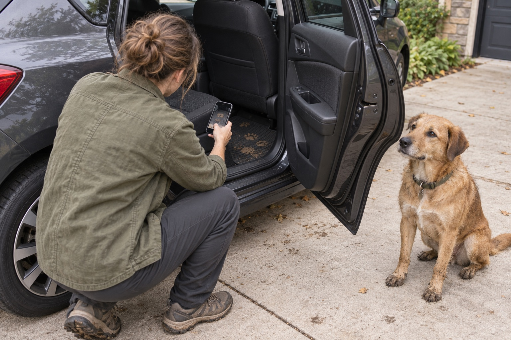
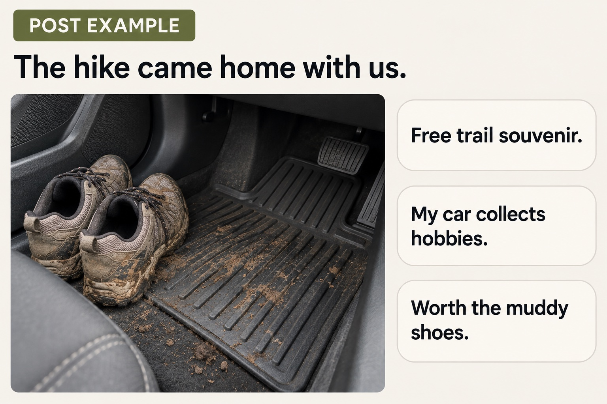
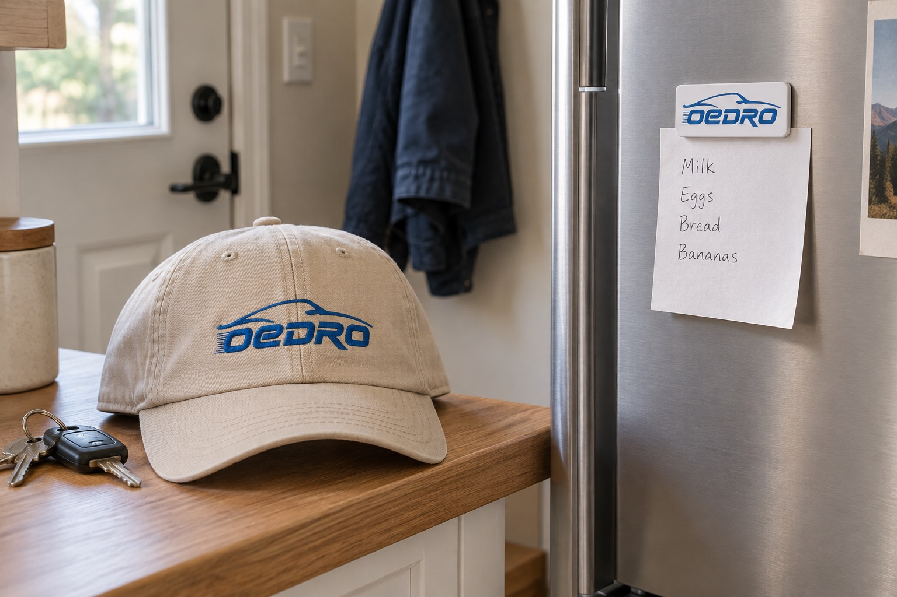
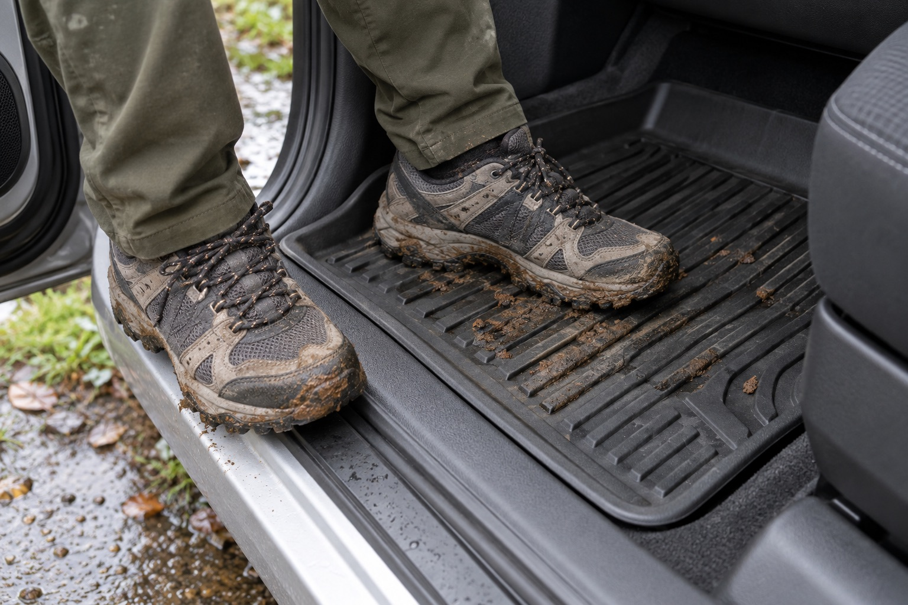
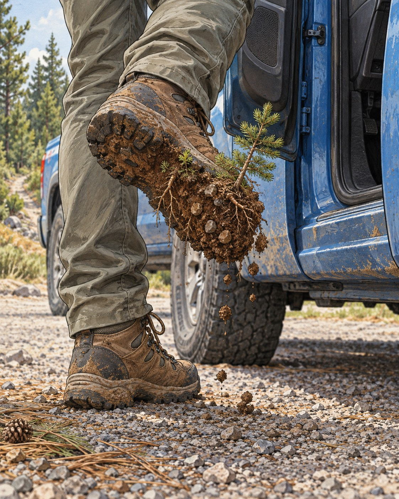
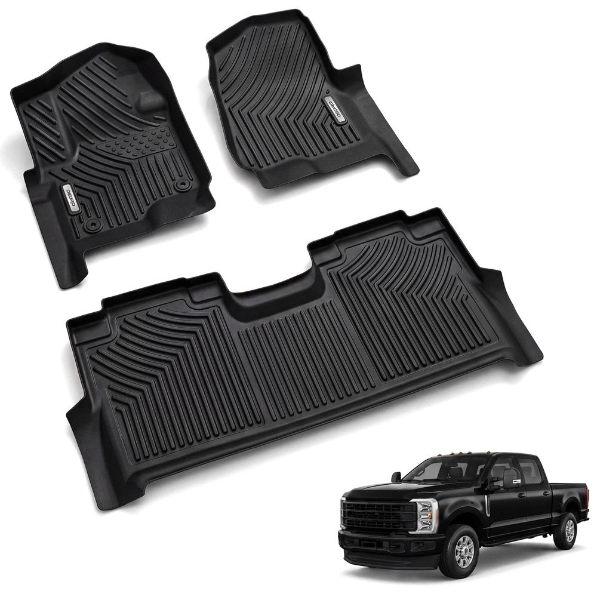
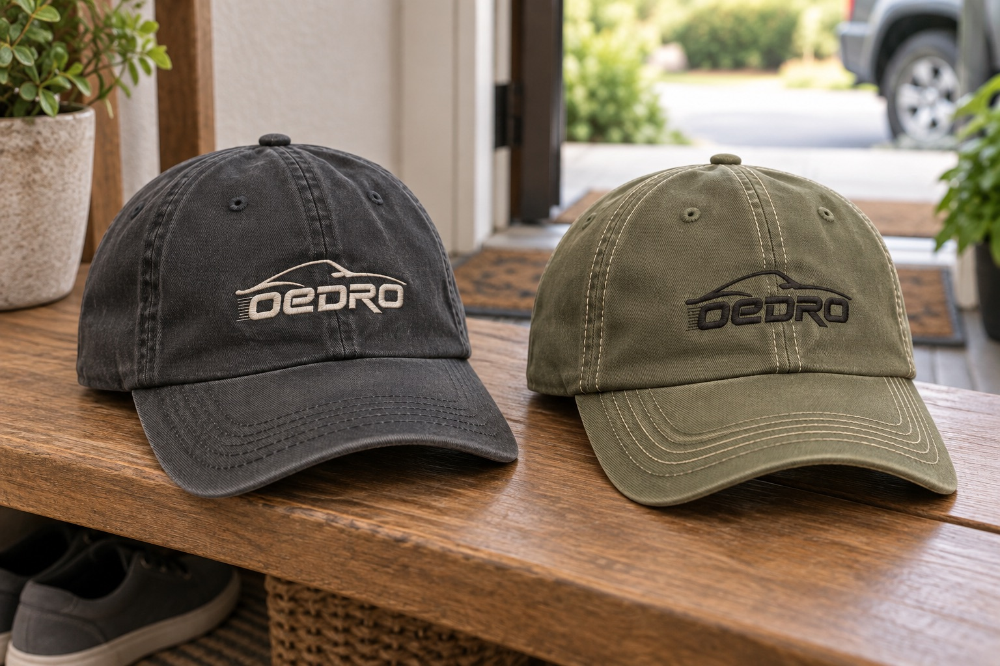
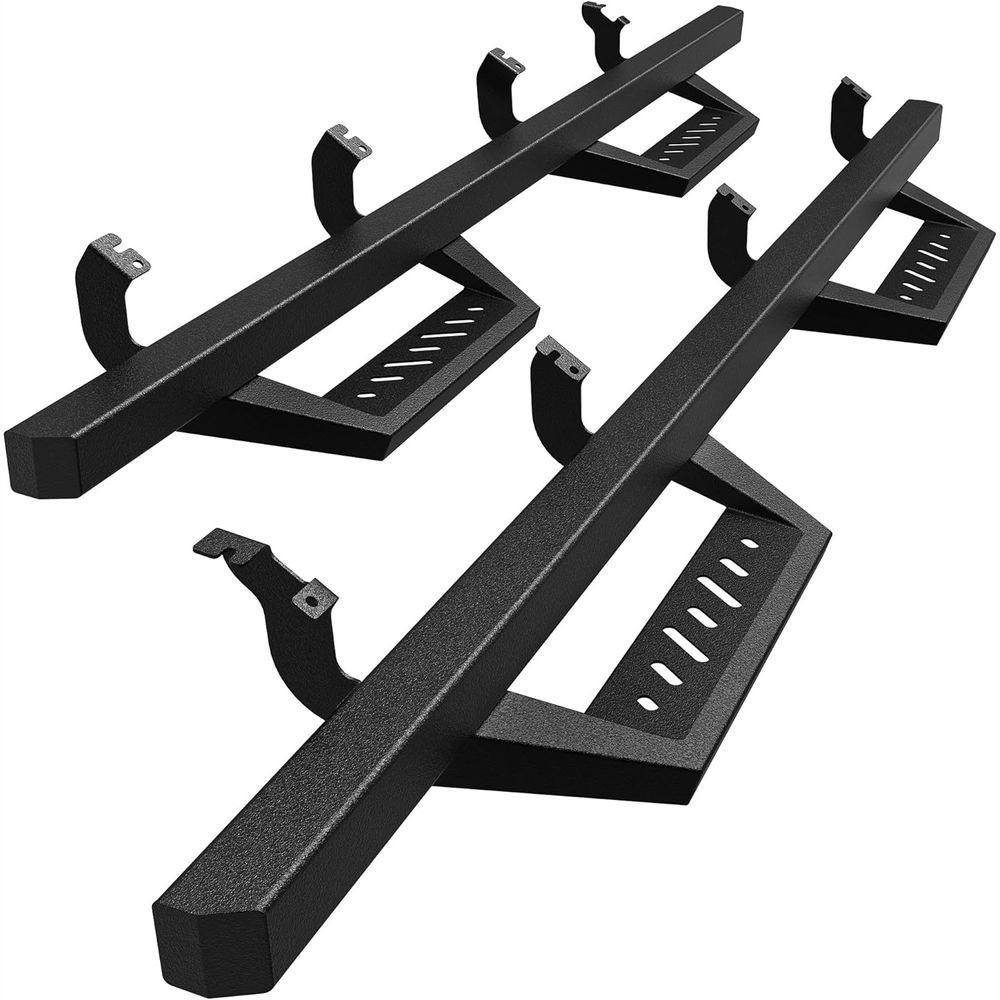

社媒形象焕新
OEDRO
期望：用户平时愿意看，买过之后愿意留下，需要配件时能想起 OEDRO。
方案要点
- 品牌关系目标：让用户在两次购买之间仍愿意看到 OEDRO 的内容。
- 产品与购买信息：继续保留产品展示、安装说明和测评，满足用户搜索时的实际需求。
- IG 和 FB：增加车主日常内容，不必每条都出现产品或带购买链接。
社媒内容与购后联系
OEDRO 官网已有 UGC Gallery，创作者内容有一定素材基础，自然投稿能否形成、素材能否自由使用，仍需确认授权。现有 IG、YouTube、Facebook 和独立 TikTok 工作，以及欢迎邮件、弃单邮件和创作者内容，均已存在。
用户装完一套脚垫或踏板后，下一次需求可能隔很久，值得补上购后持续联系。

继续保留
产品展示、安装说明、测评和购买入口留好，让有需求的用户自己判断。
增加试验
日常车主内容、用户故事、真实改装、共创和购后联系。看看两次需求之间，用户愿不愿意继续参与。
一条帖子与评论接话

帖子样稿 · 徒步带回来的泥
The hike came home with us.
这趟徒步，也跟着回了家。
模拟评论与回复
以下用于示范接话方式，并非真实用户留言。
- 评论示例
- Free trail souvenir.
- 品牌回复
- My car collects hobbies.
- 另一种接话
- Worth the muddy shoes.
“免费的山路纪念品”可以接“车负责收集这些爱好”，也可以说“这趟走得值，鞋脏点没关系”。顺着车主的笑点回，遇到产品问题再认真答。
社媒与周边的日常联系
社媒靠车主幽默、用车知识、产品信息和活动反复刷脸，周边在居家和外出时被真的用上。这两条路都可能让人下次要买配件时想起品牌。
- 刷到内容
- 车主趣事、用车知识、产品信息、活动 经常看到，逐渐熟悉
- 用到周边
- 家里的冰箱贴、出门戴的帽子、随身携带的钥匙扣 日常使用，反复想起

帽子出门时戴，冰箱贴留在家里的冰箱上夹便条，钥匙扣每天随身携带。获得方式可以是购买、赠送或参加活动。投票共创只是其中一种形式。
平台按任务分工
- 以视觉化的车主生活和互动为主，适合作为日常内容的第一落点。
- 除复用 IG 内容外，也测试讨论型内容，观察用户是否愿意在评论区聊用车问题。
- YouTube
- 继续制作面向搜索的安装、实测和长期使用内容，建立信任，需与视频团队配合。
- TikTok
- 由现有团队继续负责商业化，双方共享可复用素材和用户问题。本次不另外搭建 TikTok 生产线。
- X
- 七天内容试跑：每四小时筛选汽车话题，制作英文短帖或回复草稿，由人工发布。产品内容以官网为准，优先采用车主共同痛点与日常趣事。
- Reddit / 论坛
- 以观察和透明回应为主，不主动发起营销帖。
- Email / Discord
- 邀请用户讨论用车问题、分享安装经历。邮件使用现有模板。
五种内容，让用户有不同理由停留
日常共鸣 · 泥鞋上车

“车刚洗完，朋友说：就走这一小段土路。”用泥鞋、狗毛和零食碎屑起头，用户说一句就能聊起来。
车主生活 · 周末同行

让乘客、宠物和车主的周末计划进画面。已有的户外乘客插画可以当话题起点，真实出游照片找愿意分享的车主约。
使用判断 · 看清细节

围着固定点、边缘和清洁位置拍近景教程。上图是商品参考，磨损和长期表现得另拍真实记录。
参与选择 · 选一顶帽子

同一画面放两款可生产方向，问“哪顶会真的戴出门？”选出来的结果用来评估打样，顺便问颜色和佩戴场景。
购买信息 · 按车型查找

围着一款踏板写清车型、年款和驾驶室版本，引用户去官网核对适配。用户已经在挑了，准确的购买信息比继续抛话题有用。
查看产品知识库 ↗三条分发示例
泥鞋趣事 · 一张图发起聊天
IG：发图并配“刚洗完车就走土路”的短句。FB：沿用画面，询问车主如何处理鞋底泥。X：提炼成一句车主能懂的笑点。评论出现具体清洁问题时，再补充有依据的建议。
长期使用记录 · 有真实材料才制作
官方从安装开始记，或者请有真实使用记录的车主自愿分享。拍清使用条件、固定点、常踩位置和清洁前后，用了多久就写多久。
YouTube：发布完整过程与限制。IG / FB：剪出能独立看懂的细节片段，保留原始记录中的时间与条件。上图用于确定拍摄对象，并非长期测试结果。
选帽子 · 图片和领取意愿一起问
IG：看图选款。FB / 邮件：同步两款设计，并补问愿意在哪些场景佩戴。X：发图片帖并关联文字投票；投票与图片分开，匿名票不能作为领奖名单。
得票高的款式先进样品评估，最终做多少还得看大家实际想不想领、成本划不划算。